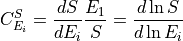
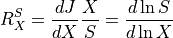

Metabolic Control Analysis¶
Preliminaries¶
Metabolic control analysis is the study of how sensitive the system is to pertubrations in parameters and how those perturbations progagate through the network. Two kinds of sensitivity are defined, system and local. The local sensitivities are described by the elasticities. These are defined as follows:

Given a reaction rate  , the elasticity describes how a given effector of the reaction step affects
the reaction rate. Because the definition is in terms of partial deriviatives, any effector that is perturbed assumes
that all other potential effectors are unchanged.
, the elasticity describes how a given effector of the reaction step affects
the reaction rate. Because the definition is in terms of partial deriviatives, any effector that is perturbed assumes
that all other potential effectors are unchanged.
The system sensitivities are described by the control and response coefficients. These come in two forms, flux
and concentration. The flux control coefficients measures how senstive a given flux is to a perturbation in the
local rate of a reaction step. Often the local rate is perturbed by changing the enzyme concentration at the step.
In this siutation the flux control coefficicent with respect to enzyme  is defined as follow:
is defined as follow:
Likewise the concentration control coefficient is defined by:

where  is a given species. The response coefficients measure the sensitivity of a flux or species concentration
to a perturbation in some external effector. These are defined by:
is a given species. The response coefficients measure the sensitivity of a flux or species concentration
to a perturbation in some external effector. These are defined by:


where  is the external effector.
is the external effector.
Methods¶
The following methods allow users to obtain various metabolic control coefficients.
This first block of methods are for parameter independent coefficients.
Use these to obtain metabolic control coefficients.